Highlighting the Emirati approach to Net-Zero through a traditional pearl diving journey.
The exhibit displays the UAE’s iniatives towards achieving carbon Net-Zero through the pearl diving journey. Viewers enter along the coastline to learn the history of the UAE to receive pearl diving nets and set sail off to sea for the "Great Dive."
From sand dunes to sky scrapers: the story of the UAE through its growing coastline.
This tactile sand castle table teaches visitors about the history of the UAE with different sand castle molds to visualize the country’s rapid progress.
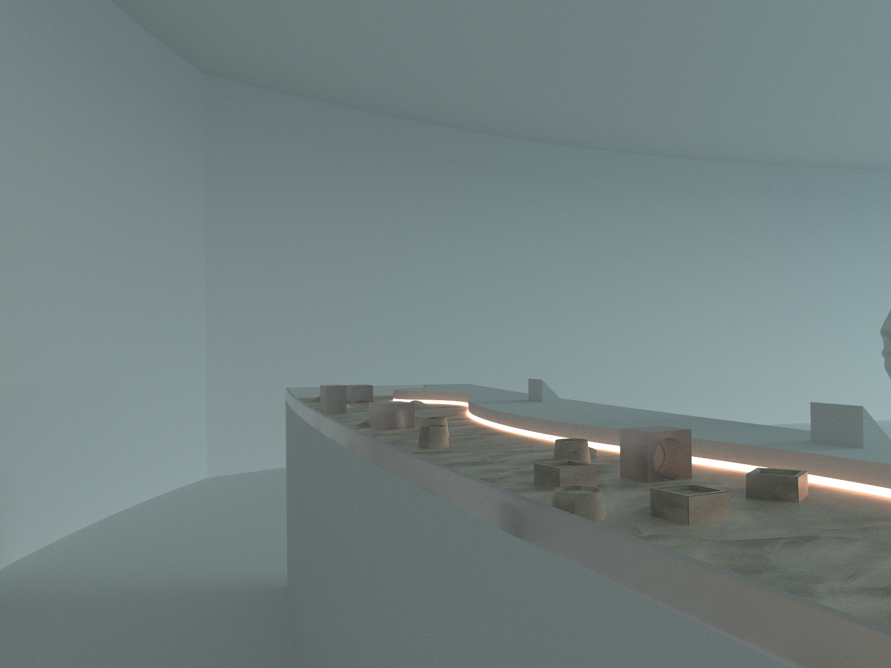
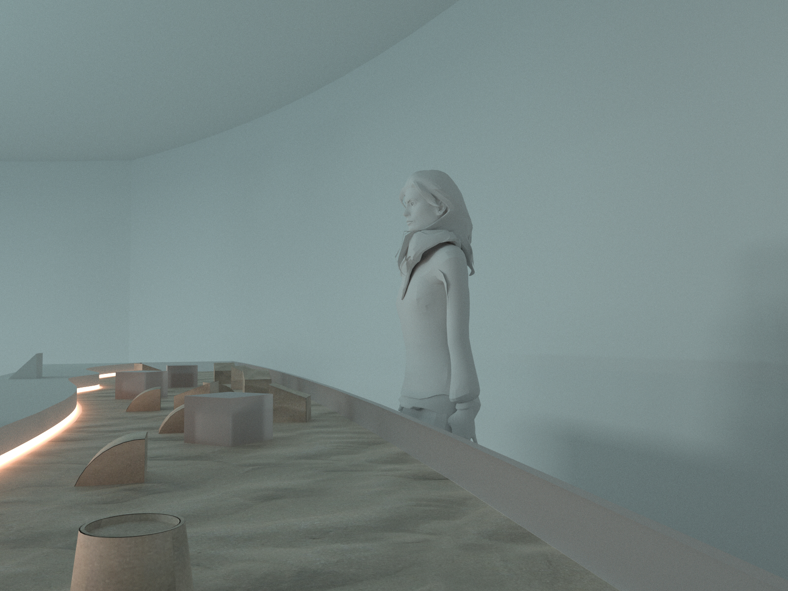
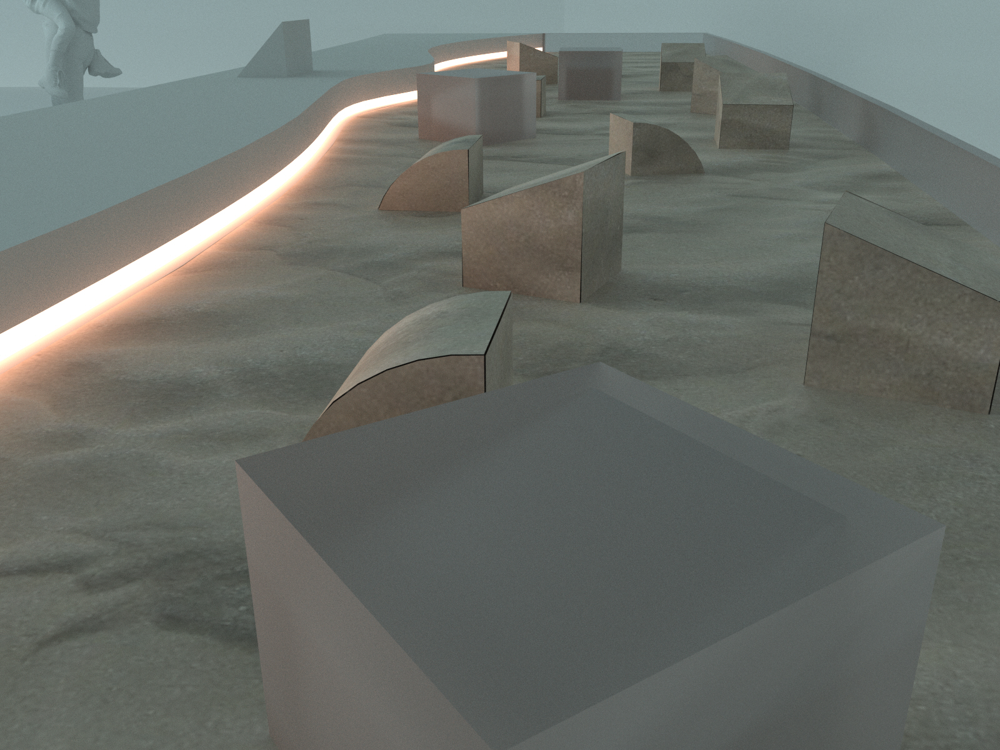
Setting sail: introducing the UAE through its origins of pearl diving with IoT “diving nets”
Emirati culture has been driven by exploration since its early history as pearl divers. Visitors learn about Emirati dhows and pearl diving expeditions with responsive IoT diving nets. The nets light up revealing the beautiful weaving patterns traditional divers made.

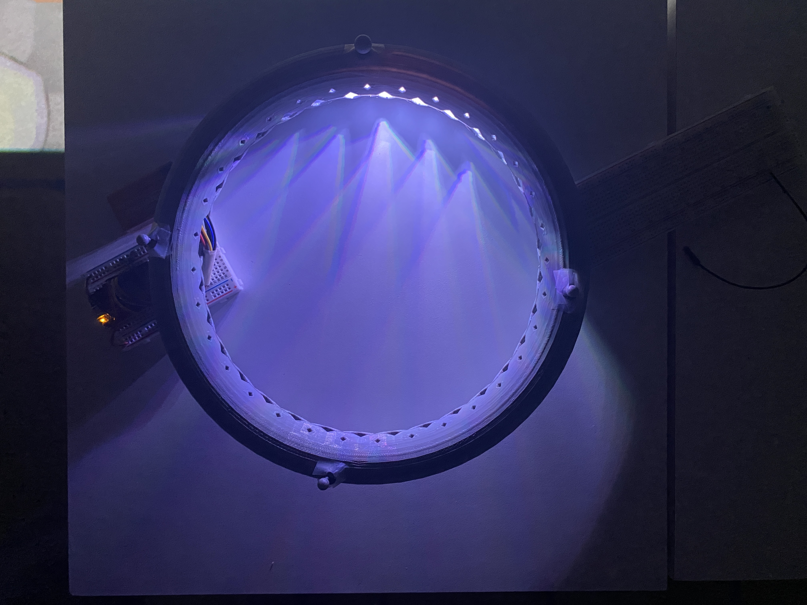
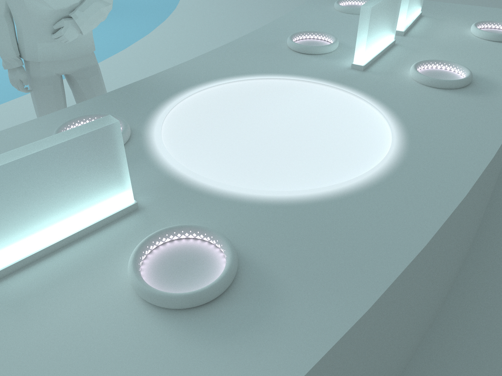
Explore the future: visitors listen to the next generation of the UAE through an immersive pearl diving experience.
We interviewed students in the UAE about their vision for the country and stored them in digital pearls. Visitors can explore these insights by catching these pearls with their nets and listen to them at designated pearl baskets, engaging everyone in a Emirati pearl diving expedition.
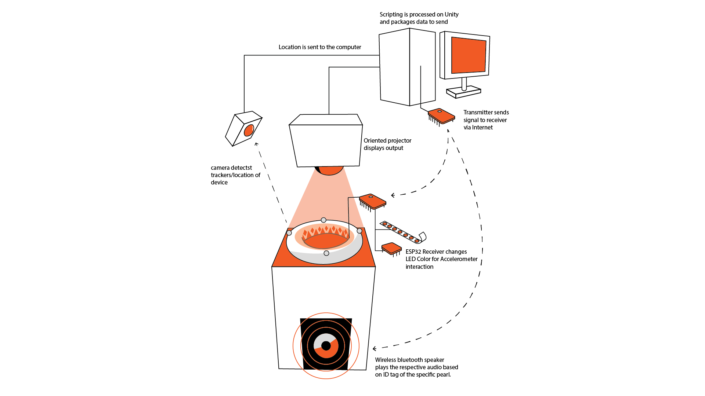
Curated micro-interactions and user journey to facilitate collaboration and exploration.
The main interactions involved with the experience involve catching pearls and collecting them in baskets around the exhibit to listen to them. Each pearl has a different color relating to a different thematic topic, as well as opportunities to join others and world-building from interacting with Hawksbill turtles.
A holistic process of simultaneously developing a culturally appropriate strategy and experience.
This process was driven by first understanding the Emirati lens on progress, and finding a motif that properly encompasses its identity into a narrative.

Crafting an co-creative experience to highlight key values of the Emirati culture.
To highlight the values of collaboration, exploration, and ambition through the Emirati lens, I began centering the experience around the tradition of pearl diving. This also broke away from previous UAE exhibits that soley tend to focus on the desert motif.
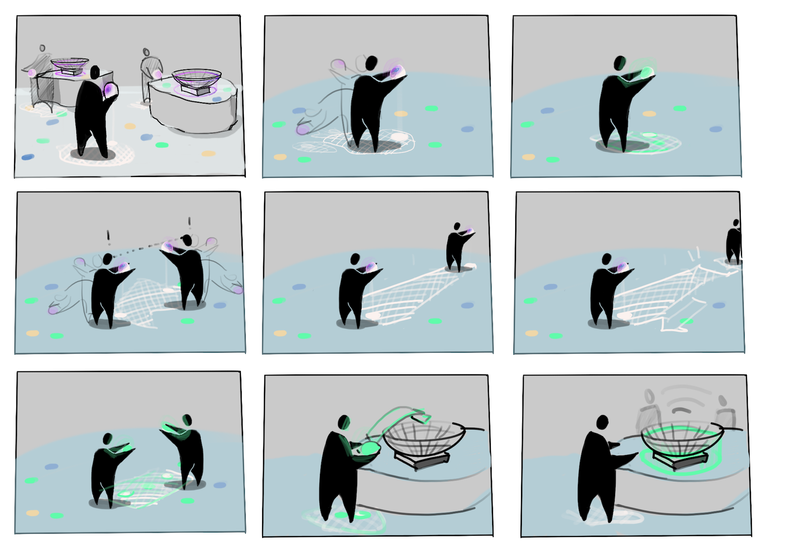
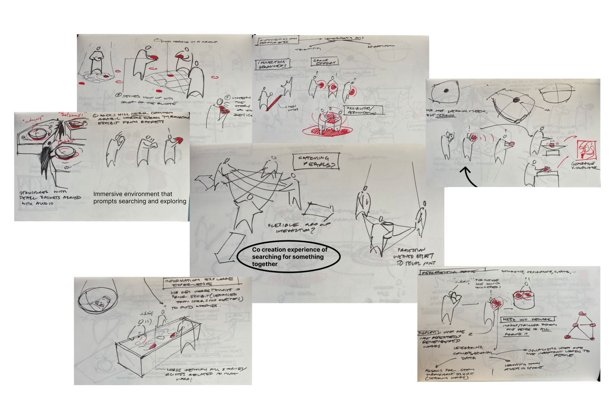
Play-testing across scales/fidelities for interaction development and accessibility features.
With the concept set, I further developed the interaction from low-fi prototyping to motion tracking. Each stage provided valuable insights on how to make the experience more collaborative and intuitive for users.

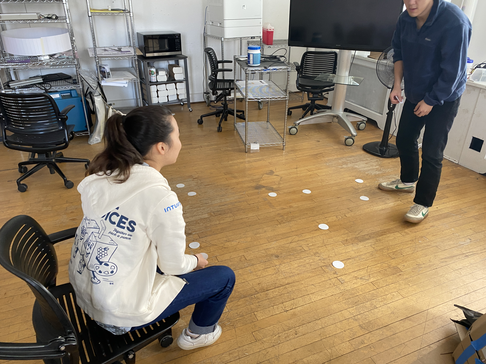


Conceptualizing and prototyping tangible interfaces to guide the experience.
To truly engage viewers in the Emirati tradition, I wanted physical product to complement the body immersive experience. This led to creating an IoT ring inspired by traditional pearl diving nets. Beyond color responsiveness, it has an accelerometer that allows people to “roll” the light around the hoop like traditional pearl sifting on dhows.
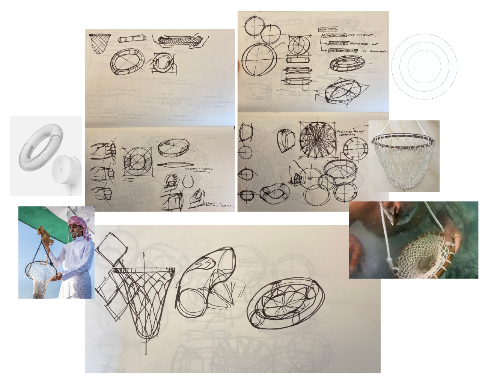


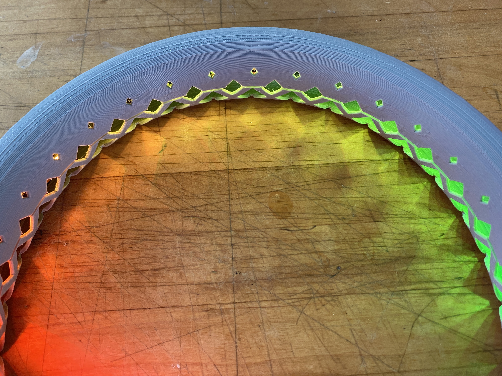